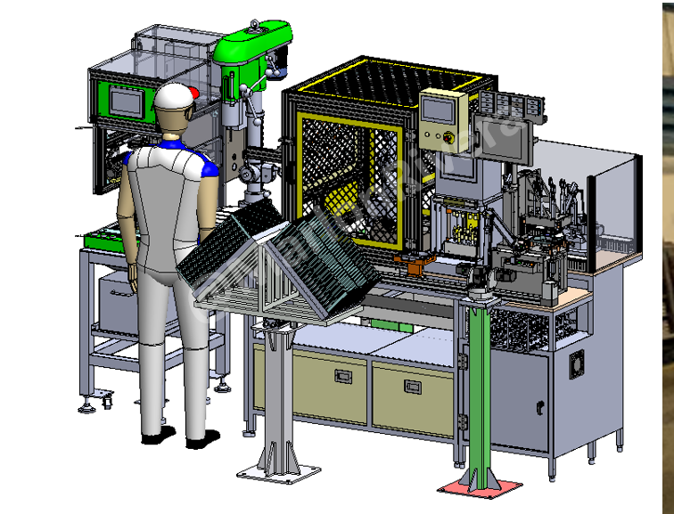

← Back to projects
Robotic Process Automation • Thailand • 2022
Robotic Deburring Automation Cell
Robotic deburring cell combining robot motion, PLC control, servo positioning, pneumatic clamping and machine safety.
Nachi 6-Axis RobotPanasonic PLCServo MotorSolidWorksPneumaticsEOAT
3D Design

Actual Machine Video
Responsibilities
Robot-cell layout, concept design, robot integration, PLC/HMI programming, servo integration and safety-system design.
What needed to be solved
Replace variable manual deburring with safe, accurate and repeatable robotic production.
Engineering approach
Synchronized robot motion, fixture positioning, sensor verification, clamping and safety interlocks.
Key outcomes
- Reduced manual deburring
- Improved consistency
- Improved operator safety
- Stable robotic production